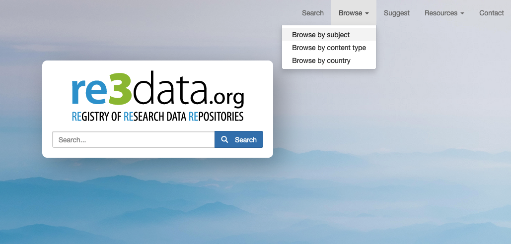
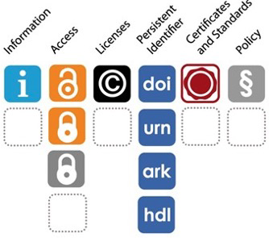

1) Publication
Overview
Data publication is an important step of FAIR data management, ensuring data findability and accessibility (when done well). Publishing FAIR data will take minimal effort if you have a good data management strategy in place right from the beginning, i.e., you planned for a concise data organization and documentation and thereby made your data interoperable and reusable.
Most commonly, data are published as supplements to journal articles and an increasing number of journals actually require that. Datasets can also be published in specialized data journals (e.g., Scientific data, Data in Brief), which means that the article itself is a rich and detailed description of the dataset. As you may have guessed, this option is mainly chosen for rather large, sampling-intensive datasets. Last but not least, it is also possible to publish an independent (without connected publication) dataset in a repository and this is often required by funders like the DFG or EU.
Irrespective of the publication option, there are common good practices when publishing data, namely
- indicating in the article that data and/or code are available,
- defining usage conditions,
- ensuring reliable access,
- choosing an appropriate repository.
These will be handled in the course of this chapter.
Even though publishing data (and code) is a prerequisite for transparent and reproducible research do note that in some cases the legal basis may prevent you from doing so. This most commonly concerns copyright or data protection issues. E.g., someone else may have the copyrights on the data you are working with and they do not allow the data to be published. Or when working with personal data (i.e., data from identifiable living people), you would violate subjects’ rights according to the general data protection regulation (GDPR) when publishing these.
There is a very nice decision tree (unfortunately only in German) that can help you find out whether and under what conditions you can publish your dataset. Broadly speaking, publishing personal data is only possible if either they can be fully anonymized (and no longer fall under GDPR) or if participants consented to their data being published. It is hence important to consider even before collecting personal data, whether they ought to be published to eventually include that in the consent form. If this topic is of interest to your research also check out Felix Schönbrodt’s lecture on “Data anonymity” from the Open Research Summer School 2023.
In seldom cases publishing data can also be limited due to concerns of national security. You should take a few minutes to consider whether your research could be misused by foreign powers. Also consider getting in contact with your supervisor, research department and/or legal department to clarify whether elements of export control policies might apply to your research.
Data Availability Statement
A Data Availability Statement (as well as a Code Availability Statement) is a special section in an article that states whether the authors have made the evidence supporting their findings available, and if so, where readers may access it. They are usually placed somewhere towards the end of the article, mostly before the Reference section. As part of their commitment to supporting open research, some journals now require all manuscripts to include a Data Availability Statement in order to be accepted for publication. Even if a journal does not require such a statement, it is highly recommendable to include it and make transparent that the data underlying the article’s findings are available1!
When submitting to a journal that uses a double-blind peer review process, it’s important to ensure that the information in the Data Availability Statement doesn’t compromise the anonymity of you or your co-authors. If there is information in your Data Availability Statement that could be used to identify the manuscript authors (e.g., by linking to a repository that reveals author information), make sure to ask the journal what they would like you to do2.
Only looking at the dataset, would you be able to tell whether the dataset is the basis for a published article?
If so, does the article include a Data Availability Statement?
Where did you find it?
Yes, there is a meta data field “Related Publication”.
Yes, it does but without linking it to the data on Edmond. You should rather contact one coauthor without providing contact details.
Before the Appendices.
Yes, part of the title reveals it.
Yes.
In the very beginning following Abstract and Figures. However, no special section therefore not very intuitive to find.
Yes, but it is not obvious. It is stated in the README.
Yes.
In the “Open Research” section before the Reference section.
Yes, but it is not obvious. In “Related works”, a link to a github repo is provided and when going there it is stated in the README.
Yes.
As separate section before “Code availability” and the Reference section.
License
If we in the end would like to share our research data and enable reuse for other researchers, we should define conditions under which the data can be reused. At this point licenses come into play. Licenses are standard contracts that regulate usage rights for published work. As already mentioned, thereby enabling other people to reuse the published work. If no license is provided with a dataset, it is not clear to others under which conditions they can reuse it and they might (against your good intentions) rather refrain from reusing it at all.
It is important to keep in mind that you can only define usage conditions by assigning licenses for work that “is yours”, i.e., that you have the copyright for. This is not always the case for data. Data that result from a significant creative process (as is often the case in the humanities or qualitative social sciences) are more likely covered by copyright while data that result from rather simple measurement processes (as is often the case for natural or quantitative social sciences) are likely not covered. Also, note the distinction between the instrument used to create the data and the data themselves in this regard. E.g., if the data you are about to publish result from a comprehensive questionnaire that you have developed, the questionnaire ought to be protected by copyright whereas the data are most likely not. As mentioned in the beginning, you can only assign licenses to work that you hold the copyright for. If this is not the case or you are unsure, it is safest to go with CC0 as this is strictly speaking not a license, but rather a waiver of copyright. You explicitly release your work into the public domain.
There are several licenses out there, as e.g. Creative Commons, MIT (software), Apache (software), Open Data Commons and it ultimately is your responsibility to pick one. If you have no advise and you do not want to read through all licenses out there, the Creative Commons licences are usually a save choice (see box below). As rule of thumb, you may want to remember to go with the least restrictive license to maximize your data’s reuse potential. A recent article gives the following recommendations3:
- Provide open research data under the CC-BY license or the CC0 label.
- If it can be assumed that research data are not protected by copyright, CC0 should be preferred.
Even if CC BY is possible copyright-wise, be aware that it merely paraphrases the rules of good scientific practice. So you are setting conditions that are rather self-evident for scientists but nevertheless imply an extra effort for reuse, namely figuring out how to attribute correctly according to the license.
For similar reasons, using more restrictive licenses should be extremely carefully considered, at least if you are intending to make your data reusable for others. In particular, it can become impossible to merge data published under different, more restrictive licenses as their licenses may be incompatible, preventing follow-up research, archiving or even publication of the combined data (cf. this CC FAQ).
CC0 is great, because it is universally compatible and ensures free reusability of research data.
Creative commons licenses are widely used in research and we will therefore go into a little bit of detail on these. CC provides four features, which form the basis of a fixed set of six CC licenses. These are:
- BY: For “attribution”, i.e., the obligation to credit the author and other parties designated for attribution
- ND: For “no derivatives”, i.e., only verbatim copies of the work can be shared
- NC: For “non-commercial”, i.e., commercial use is excluded from the license grant
- SA: For “share alike”, i.e., the work can be modified and modified versions can be published but only under the original or a compatible license
The following six licenses result from the combination of these four features, listed from most (left) to least (right) permissive here:


In addition, there are two further labels, to dedicate the published work to the public domain.
- CC0: Allowing others to reuse your work without conditions, i.e., even if you were copyright holder you are not insisting on it. Good scientific practice obviously foresees that you will in any case credit the author(s) of work you are (re)using!
- Public domain mark: Explicitly label work that is not restricted by copyright.

As stated above, the CC0 label or the CC BY license should be your preferred choice. In (the unlikely) case that you need a more restrictive license, there is a nice graphical illustration to help you: choo-choo-choose your license.
{kind=link}
Are you actually allowed to reuse your dataset?
If so, under which conditions?
Yes.
Yes.
- No.
Yes.
CC BY 4.0. However the git repo is under a Apache License Version 2.0, so depending on which version you use, the conditions are different.
Persistent identifier
Imagine a scenario in which a repository is no longer maintained, so that all datasets published in that repository are no longer available at the repository’s URLs (a quite real scenario, as you can see in this article). To avoid data loss, the original repository migrated its datasets to another repository, where it however gets a new URL. Consequently, if the corresponding article linked to its dataset via the URL (e.g., https://osf.io/gn47c/), it can no longer be found. What now? In such cases, persistent identifiers (PIDs) are extremely helpful if not essential. The ones we consider crucial are listed below.
Digital object identifier
A digital object identifier (DOI) points directly to a digital object rather than to its location online (unlike URL). You may know it already from publications. It consists of a unique number made up of a prefix and a suffix separated by a forward slash as e.g., 10.5281/zenodo.4322849. It allows things to be uniquely identified and accessed reliably by using the DOI proxy server https://doi.org/ and appending the DOI, e.g., https://doi.org/10.5281/zenodo.4322849.
Open Researcher and Contributor ID
The Open Researcher and Contributor ID (ORCID) provides a unique and persistent identifier that you yourself connect with your professional (scientific) information. This helps to recognize all your work, even if e.g., you change your name, one of your coauthors misspells it, or you move on to a new institution. Getting an ORCID is free and quick and meanwhile, several platforms, from grant application to manuscript submission and beyond, allow you to use your ORCID to log into their system. Note however, that this is a self-maintained identifier. It thus is only as up-to-date as you keep it.
Research Organization Registry
Last but not least, the Research Organization Registry (ROR) is a global, community-led registry of open persistent identifiers for research organizations. The LMU has one and all Max Planck Institutes have one as well. These are much easier to use than entering all the affiliation information whenever asked for it and at the same time help disambiguate institutional affiliations.
Can your dataset be accessed reliably?
Who would you contact, if questions concerning the dataset arose?
Is that contact still available?
Does your institution have a ROR?
Yes, via DOI https://doi.org/10.17617/3.1STIJV.
The first author as listed corresponding author in the article.
Unsure, he has moved on but he also connected his ORCID profile, which is however not well maintained.
Yes, via DOI https://doi.org/10.5282/ubm/data.288.
There is a contact person listed in the metadata with corresponding email address.
Unsure, he is not listed at the Institut für Soziologie anymore, but he also connected his ORCID profile in the article.
No, it only has a URL.
The first author as listed corresponding author in the article.
Unsure, she has moved on, but there is no alternative.
Yes, via DOI https://doi.org/10.5281/zenodo.10650333.
The first author as listed corresponding author in the article.
Yes, and he also connected his ORCID profile.
Repository
Repositories are database systems to document, store and publish digital objects. Thereby, they ensure visibility (via metadata) and sustainability (via use of PIDs) of the digital objects they are holding. Repositories can be:
- Discipline-specific (e.g. OpenNeuro)
- General (e.g. Zenodo, OSF)
- Institutional (e.g. Edmond MPG, Open Data LMU)
If available, discipline-specific repositories are preferable, because these are commonly used in a specific research field and researchers will most likely start searching for data in those repositories. The “Registry of research data repositories” (Re3data.org) provides a collection of repositories with very nice search and overview functions. E.g., you can browse by subject (i.e., discipline).

When looking for a repository there are various criteria that should be considered.
Criteria
- Is the data completely open? Can I control access or set an embargo period?
- Under what license can I publish data?
- Does the repository provide a persistent identifier?
- Is the repository certified as an indicator for its sustainability?
- What are the costs?
- What are the user rights?
- Where are the data hosted? Is this compliant with the General Data Protection Regulation?
- Is there a limit to the amount of data I can upload?
When searching re3data, most of these criteria are displayed beside the repository via icons, so you can immediately check whether a potential repository fulfills your requirements.

Which repository was used to publish your dataset?
Can you find that repository on re3data.org?
Under what criteria can you publish your data in that repository?
Edmond.
Yes.
Click on the repository and go through the details: It assigns a DOI, you can publish under various licenses, it is certified etc.
Open Data LMU.
Yes.
Click on the repository and go through the details: It assigns a DOI, you can publish under various licenses, it is certified etc.
OSF.
Yes.
Click on the repository and go through the details: It assigns a DOI, you can publish under various licenses, it is certified etc.
Zenodo.
Yes.
Click on the repository and go through the details: It assigns a DOI, you can publish under various licenses, it is certified etc.
With the emerging requisite of research data being FAIR, a number of tools have been developed that automatically check how FAIR published data are. These tools have been evaluated and a nice overview has been published (c.p. https://zenodo.org/records/7701941). We invite you to play around with these tools, especially the automatic tools F-uji Tool and FAIR enough. E.g., you may input your dataset to different tools and look at the output, check whether the output confirms your impression of the dataset’s reusability, or find a dataset that has been published in different repositories and see how that influences a tool’s output (e.g., https://doi.org/10.5281/zenodo.7298798 vs. https://doi.org/10.17617/3.LLWRWR.)
Footnotes
Source https://www.cambridge.org/core/services/authors/open-data/data-availability-statements.↩︎
Source https://www.cambridge.org/core/services/authors/open-data/data-availability-statements.↩︎
Brettschneider, P., Axtmann, A., Böker, E., & von Suchodoletz, D. (2021): Offene Lizenzen für Forschungsdaten: Rechtliche Bewertung und Praxistauglichkeit verbreiteter Lizenzmodelle, in: O-Bib. Das Offene Bibliotheksjournal 8(3), pp. 1–22, https://doi.org/10.5282/o-bib/5749. [only in German]↩︎